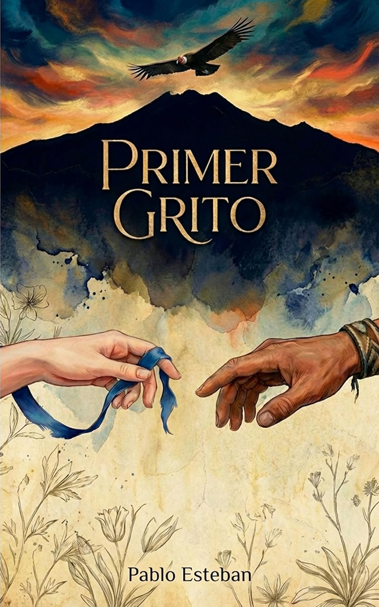
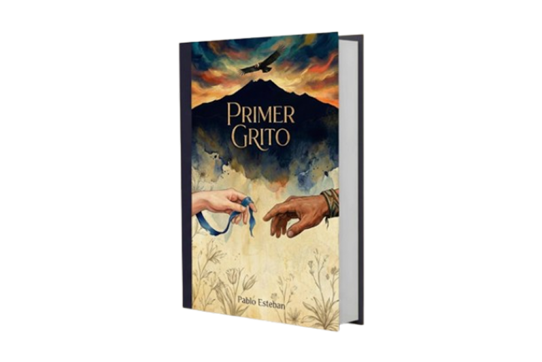

Primer Grito
Todo comienza con un silencio que pesa y una voz que lucha por nacer.
Primer Grito recorre el origen de las heridas más profundas, esas que se forman antes de aprender a nombrar el dolor. La historia avanza entre recuerdos, símbolos y emociones crudas, guiando al lector por un viaje íntimo donde la identidad se construye a partir de la memoria y la valentía de enfrentarse a ella.
Cada página late con fuerza, invitando a reconocer que el verdadero cambio no llega en calma, sino en el momento exacto en que se decide gritar por primera vez.
Comprar AhoraPablo Esteban
Pablo Esteban da voz a las historias que nacen en el silencio. En Primer Grito, su escritura sensible y profunda explora la infancia, la identidad y las fracturas sociales de un país marcado por la desigualdad y la memoria. A través de una narrativa íntima y poderosa, el autor invita a cuestionar el origen de lo aprendido y a reconocer que todo cambio comienza cuando alguien se atreve a alzar la voz.
Reseñas
"Una novela potente y bien escrita, que logra mostrar el choque entre poder y humanidad sin caer en excesos. Primer Grito incomoda, cuestiona y obliga a reflexionar sobre el origen de muchas desigualdades que aún persisten"
"Sentí cada página. La forma en que el autor construye los personajes y los mundos que habitan es profundamente humana. Primer Grito no es solo una novela histórica, es un recordatorio de cómo nacen las heridas y también la conciencia."
"Primer Grito me llevó directo a la infancia, a esas emociones que uno guarda sin saber por qué. Es una historia dura y hermosa a la vez, que se queda contigo mucho después de cerrar el libro. Leerlo fue mirar de frente una parte de nuestra historia que duele, pero que necesita ser contada."
"Primer Grito is a deeply moving novel that stays with you long after the final page. Through powerful storytelling and emotional depth, the author captures the pain, innocence, and awakening of a world shaped by silence and inequality. It is a story that feels both intimate and necessary"

Comprar en Amazon